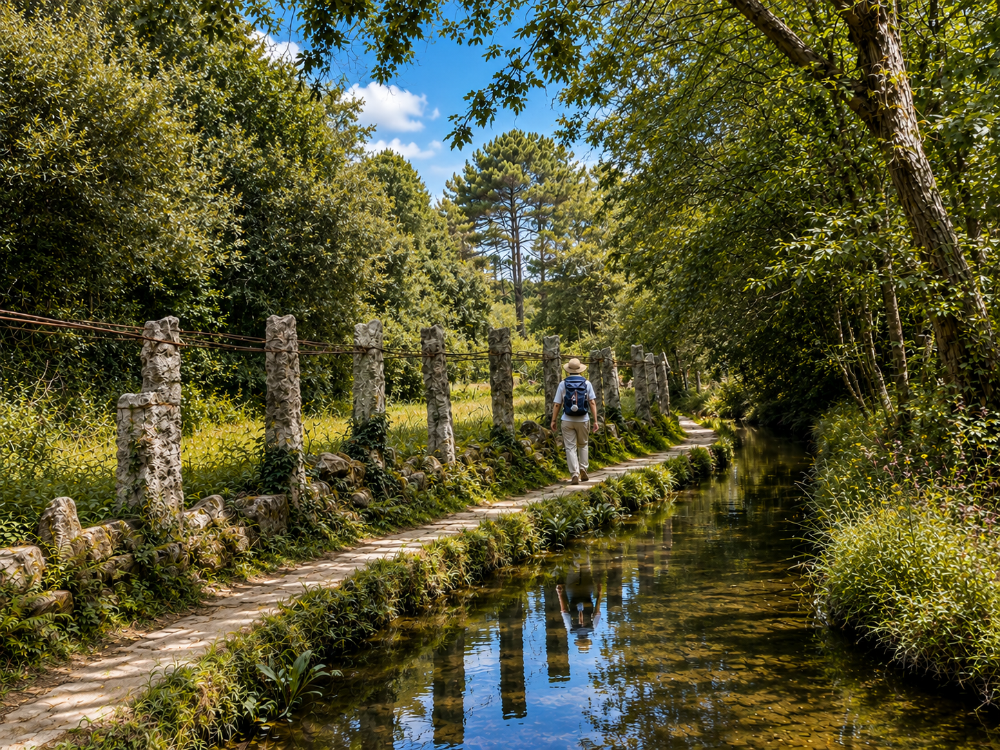

Camino de Santiago er pilgrimsleden til Santiago de Compostela, og jeg har ledet grupper på både den franske og portugisiske ruten over 15 ganger. Det er ikke bare en vandring. Det er en reise inn i deg selv.
Min første Camino – en gave fra hjertet
Det startet egentlig ikke med meg. Min første Camino gikk jeg for min onkel og hans vennegjeng. Vi begynte fra León, med støttebuss langs veien – en løsning som gjør Camino tilgjengelig for de som ikke kan gå hele strekningen til fots. Jeg var guide, koordinator og heiagjeng på én gang.
Jeg ante ikke hva som ventet meg. Fra det øyeblikket jeg satte foten på Caminoen for første gang, var jeg perdidamente enamorada – hodeløst forelsket.
«Fra det øyeblikket jeg satte foten på Caminoen for første gang, visste jeg at jeg ville komme tilbake. Og tilbake. Og tilbake igjen.»
Fra én Camino til femten – og mer til
Etter den første turen begynte forespørslene å komme. Norske reisebyråer, svenske operatører, australske grupper – og nå i sommer også et amerikansk selskap – har alle ønsket Gunvor som guide og tilrettelegger på Camino. Noen vil gå fort. Noen vil gå sakte. Noen vil gå i stillhet. Alle finner det de leter etter.
Den franske og den portugisiske ruten
Camino Francés – den klassiske
Med grupper starter vi vanligvis i Sarria – det siste startpunktet som gir deg den offisielle Compostela-pilgrimsattesten, perfekt for et intenst og meningsfylt 5-dagers program. De siste 115 kilometerne inn mot Santiago er de vakreste. Den franske ruten er den mest kjente og mest vandrede – og etter min mening den vakreste av alle rutene.
Camino Portugués – den rolige
Den portugisiske ruten har flere varianter. Den klassiske går inn i landet og starter i Tui, en sjarmerende grenseby ved Miño-elven. Kystvarianten – Camino Portugués da Costa – starter i A Guarda og følger Atlanterhavskysten før den møter hovedruten. Det finnes også en spirituell variant med båt, en del av strekningen fra Pontevedra til Padrón, der man legger etappen over på vann og seiler den siste biten inn mot Padrón. Ruten er roligere enn den franske, med færre turister, og har en annen stemning – mer meditativ, mer intim.

- Camino Francés – starter i Sarria, ca. 115 km til Santiago
- Camino Portugués – starter i Tui eller A Guarda
- Normalt 5 dagers program for grupper
- Ledet for norske, svenske, australske og amerikanske grupper
- Over 15 komplette Camino-turer totalt
Hvilken rute liker jeg best?
Hvis du spør meg ærlig, er det vanskelig å velge. Jeg har nettopp gått den portugisiske ruten igjen, og den var helt flott. Den franske har bredden – den enorme variasjonen i landskap, de mange nasjonalitetene du møter. Den portugisiske har sin egen ro og nærhet. Begge er like fine på sin måte. Men uansett hvilken vei du velger – følelsen når du ankommer Santiago er den samme. Hver gang. Uten unntak.
«Uansett hvilken vei du velger – følelsen når du ankommer katedralen i Santiago er den samme. Tårene kommer av seg selv. Hver gang. Uten unntak.»
En mer spirituell Camino – dagens ord
De siste årene har jeg ønsket å gi Camino en dypere dimensjon for gruppene mine. Jeg bruker syv ord fra pilegrimsleden – stillhet, langsomhet, spiritualitet, deling, frihet, enkelhet og ro. Hver morgen, før vi begynner å gå, velger vi et av dem – kanskje stillhet, kanskje deling, kanskje langsomhet. Vi bærer dette ordet med oss gjennom dagens etappe.
Om kvelden, over middag, deler vi hva ordet betød for oss den dagen. De samtalene, de historiene, den åpenheten mellom mennesker som knapt kjente hverandre for noen dager siden – det er det vakreste jeg vet om.
Ofte stilte spørsmål
Camino Francés fra Sarria, omtrent 115 km til Santiago, og Camino Portugués fra Tui eller A Guarda – normalt som et 5-dagers program.
Gunvor foretrekker selv den franske ruten, for variasjonen i landskap og de mange nasjonalitetene man møter underveis – men begge ruter gir en sterk opplevelse ved ankomst til Santiago.
Over 15 komplette Camino-turer, for norske, svenske, australske og amerikanske grupper.